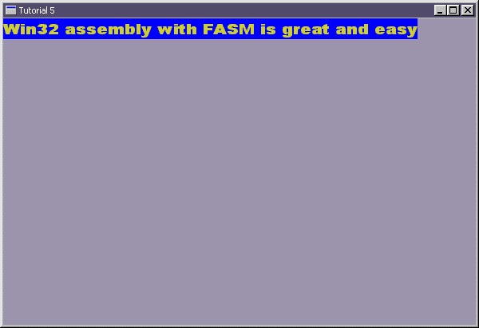

|
Tutorial 5 : More about Text
format PE GUI 4.0
entry start
include '%fasminc%\win32a.inc'
macro RGB cR, cG, cB {
xor eax,eax ;clear the eax
mov ah,cB
shl eax,8
mov ah,cG
mov al,cR
}
section '.data' data readable writeable
wHMain dd ?
wHInstance dd ?
wTitle db 'Tutorial 5',0
wClsName db 'TUT05',0
wMsg MSG
wCls WNDCLASS
OBJ_FONT equ 6
;exp = experiment
expHdc dd ?
expFont db 'script',0
expPs PAINTSTRUCT
expTxt db 'Win32 assembly with FASM is great and easy',0
section '.code' code readable executable
start:
; +------------------------------+
; | registering the window class |
; +------------------------------+
invoke GetModuleHandle,NULL
mov [wHInstance],eax
mov [wCls.hInstance],eax
mov [wCls.style],CS_HREDRAW or CS_VREDRAW
mov [wCls.lpfnWndProc],window_procedure
mov [wCls.lpszClassName],wClsName
mov [wCls.hbrBackground],COLOR_WINDOW+1
invoke LoadIcon,NULL,IDI_APPLICATION
mov [wCls.hIcon],eax
invoke LoadCursor,NULL,IDC_ARROW
mov [wCls.hCursor],eax
invoke RegisterClass,wCls
; +--------------------------+
; | creating the main window |
; +--------------------------+
invoke CreateWindowEx,\
0,\
wClsName,\
wTitle,\
WS_OVERLAPPEDWINDOW or WS_VISIBLE,\
CW_USEDEFAULT,\
CW_USEDEFAULT,\
CW_USEDEFAULT,\
CW_USEDEFAULT,\
NULL,\
NULL,\
[wHInstance],\
NULL
mov [wHMain],eax
; +---------------------------+
; | entering the message loop |
; +---------------------------+
window_message_loop_start:
invoke GetMessage,wMsg,NULL,0,0
or eax,eax
je window_message_loop_end
invoke TranslateMessage,wMsg
invoke DispatchMessage,wMsg
jmp window_message_loop_start
window_message_loop_end:
invoke ExitProcess,0
; +----------------------+
; | the window procedure |
; +----------------------+
proc window_procedure,hWnd,uMsg,wParam,lParam
push ebx esi edi ;eventhough the API would preserved, but play safe :p
cmp [uMsg],WM_PAINT
je wmPAINT
cmp [uMsg],WM_DESTROY
je wmDESTROY
wmDEFAULT:
invoke DefWindowProc,[hWnd],[uMsg],[wParam],[lParam]
jmp wmBYE
wmPAINT:
invoke BeginPaint,[hWnd],expPs
mov [expHdc],eax
invoke GetCurrentObject,[expHdc],OBJ_FONT
push eax ;default font object
invoke CreateFont,\
26,\
12,\
0,\
0,\
400,\
0,\
0,\
0,\
OEM_CHARSET,\
OUT_DEFAULT_PRECIS,\
CLIP_DEFAULT_PRECIS,\
DEFAULT_QUALITY,\
DEFAULT_PITCH or FF_SCRIPT,\
expFont
invoke SelectObject,[expHdc],eax
RGB 200,200,50
invoke SetTextColor,[expHdc],eax
RGB 0,0,255
invoke SetBkColor,[expHdc],eax
invoke lstrlen,expTxt ;help us to count the string length
invoke TextOut,[expHdc],0,0,expTxt,eax
pop eax
invoke SelectObject,[expHdc],eax
invoke EndPaint,[hWnd],expPs
jmp wmBYE
wmDESTROY:
invoke PostQuitMessage,0
wmBYE:
pop edi esi ebx
return
endp
section '.idata' import data readable writeable
library KERNEL32, 'KERNEL32.DLL',\
USER32, 'USER32.DLL',\
GDI32, 'GDI32.DLL'
import KERNEL32,\
GetModuleHandle, 'GetModuleHandleA',\
lstrlen, 'lstrlenA',\
ExitProcess, 'ExitProcess'
import USER32,\
RegisterClass, 'RegisterClassA',\
CreateWindowEx, 'CreateWindowExA',\
DefWindowProc, 'DefWindowProcA',\
ShowWindow, 'ShowWindow',\
LoadCursor, 'LoadCursorA',\
LoadIcon, 'LoadIconA',\
BeginPaint, 'BeginPaint',\
EndPaint, 'EndPaint',\
GetMessage, 'GetMessageA',\
TranslateMessage, 'TranslateMessage',\
DispatchMessage, 'DispatchMessageA',\
PostQuitMessage, 'PostQuitMessage'
import GDI32,\
CreateFont, 'CreateFontA',\
SetTextColor, 'SetTextColor',\
SetBkColor, 'SetBkColor',\
TextOut, 'TextOutA',\
GetCurrentObject, 'GetCurrentObject',\
SelectObject, 'SelectObject'
Result :

|